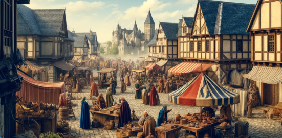
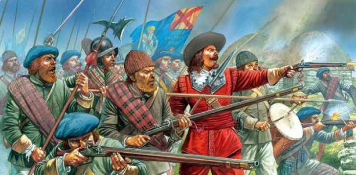
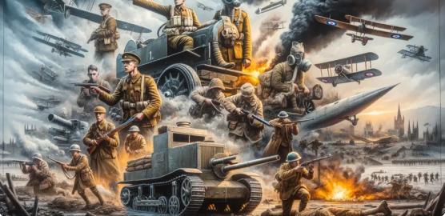

Quais conteúdos eu devo estudar para o vestibular?
História Antiga
- Civilizações Mesopotâmicas (Sumérios, Babilônios, Assírios)
- Egito Antigo
- Grécia Antiga (Democracia, Guerras, Filosofia)
- Roma Antiga (República, Império, Direito Romano, Queda)
História Medieval
- Alta Idade Média (Feudalismo, Cruzadas)
- Baixa Idade Média (Renascimento Comercial e Urbano, Crise do Feudalismo)
- Islamismo e Expansão Islâmica
- Império Bizantino
História Moderna
- Renascimento Cultural
- Reforma Protestante e Contrarreforma
- Expansão Marítima e Mercantilismo
- Colonização da América (América Espanhola, Colonização do Brasil)
- Absolutismo
- Revoluções Inglesas (Revolução Puritana, Gloriosa)
- Iluminismo
- Revolução Industrial
História Contemporânea
- Revolução Francesa
- Era Napoleônica
- Independências na América Latina (Brasil, Haiti)
- Revoluções de 1848
- Unificação Italiana e Alemã
- Imperialismo e Neocolonialismo
- Primeira Guerra Mundial
- Revolução Russa
- Período Entre Guerras (Nazismo, Fascismo, Crise de 1929)
- Segunda Guerra Mundial
- Guerra Fria
- Descolonização da África e da Ásia
- América Latina: Revolução Cubana
- Movimentos sociais e culturais do século XX
- Neoliberalismo e Globalização